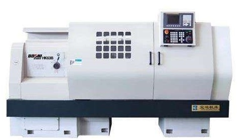
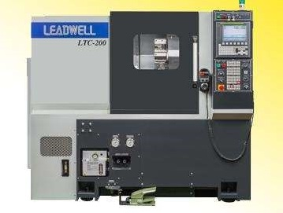

FANUC数控车/铣床操作
可培训内容如下：
- 认识FANUC数控车/铣床操作面板，及各种键的使用
- 如何正确开机，以及应先做哪些安全检查。
- 机床手动操作，包括开机的操作，手动回零，手动连续进给，步进/手轮进给。
- 零件程序的编辑、存储。包括输入程序，程序号检索，程序段检索，程序编辑
- 如何正确安装刀具。
- 参数设置，包括刀具位置偏置量、刀尖半径补偿量的设定，刀具磨损补偿量的设定，工件坐标系偏移量的设定，工件坐标系偏移的直接输入，刀具偏置量的直接输入
- 按程序进行加工。
- 加工完毕测量尺寸等。
- 数控车/铣床的安全操作规程
- 数控车/铣床日常维护及保养
本工作室目前具有设备：
FANUC数控车/铣机床各一台。数控车床为FANUC 0TD系统，铣床为台湾丽伟配备FANUC 0iMD系统，并且此机床已经配备数控分度头，可以实现四轴联动加工。


SIEMENS数控车/铣床操作
可培训内容如下：
- 认识SIEMENS数控车/铣床操作面板，及各种键的使用
- 如何正确开机，以及应先做哪些安全检查。
- 机床手动操作，包括开机的操作，手动回零，手动连续进给，步进/手轮进给。
- 零件程序的编辑、存储。包括输入程序，程序号检索，程序段检索，程序编辑，
- 如何正确安装刀具。
- 参数设置，包括刀具位置偏置量、刀尖半径补偿量的设定，刀具磨损补偿量的设定，工件坐标系偏移量的设定，工件坐标系偏移的直接输入，刀具偏置量的直接输入
- 按程序进行加工。
- 加工完毕测量尺寸等。
- 数控车/铣床的安全操作规程
- 数控车/铣床日常维护及保养